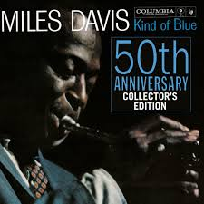

Kind of Blue – Miles Davis
Año: 1959
Género: Jazz modal
Duración: 55:15
Descripción
Kind of Blue es uno de los mejores discos de Jazz de la Historia.
Lista de canciones
- So What
- Freddie Freeloader
- Blue in Green
- All Blues
- Flamenco Sketches
Inicio > Listado de discos > Ficha del disco
Año: 1959
Género: Jazz modal
Duración: 55:15
Kind of Blue es uno de los mejores discos de Jazz de la Historia.